Tutorial 1: Sparsity and Sparse Coding#
Week 1, Day 5: Microcircuits
By Neuromatch Academy
Content creators: Noga Mudrik, Xaq Pitkow
Content reviewers: Yizhou Chen, RyeongKyung Yoon, Ruiyi Zhang, Lily Chamakura, Hlib Solodzhuk, Patrick Mineault, Alex Murphy
Production editors: Konstantine Tsafatinos, Ella Batty, Spiros Chavlis, Samuele Bolotta, Hlib Solodzhuk, Alex Murphy
Tutorial Objectives#
Estimated timing of tutorial: 1 hour 20 minutes
In this tutorial, we will discuss the notion of sparsity. In particular, we will:
Recognize various types of sparsity (population, lifetime, interaction).
Relate sparsity to inductive bias, interpretability, and efficiency.
If you want to download the slides: https://osf.io/download/eckvr/
<__main__._NoOpWidget at 0x7f9af0d2cc70>
Setup#
Install and import feedback gadget#
Show code cell source
# @title Install and import feedback gadget
!pip install vibecheck datatops --quiet
from vibecheck import DatatopsContentReviewContainer
def content_review(notebook_section: str):
return DatatopsContentReviewContainer(
"", # No text prompt
notebook_section,
{
"url": "https://pmyvdlilci.execute-api.us-east-1.amazonaws.com/klab",
"name": "neuromatch_neuroai",
"user_key": "wb2cxze8",
},
).render()
feedback_prefix = "W1D5_T1"
Imports#
Show code cell source
# @title Imports
#working with data
import numpy as np
import pandas as pd
from scipy.stats import kurtosis
#plotting
import matplotlib.pyplot as plt
import seaborn as sns
import logging
import matplotlib.patheffects as path_effects
#interactive display
import ipywidgets as widgets
from ipywidgets import interact, IntSlider
from tqdm.notebook import tqdm as tqdm
#modeling
from sklearn.datasets import make_sparse_coded_signal, make_regression
from sklearn.decomposition import DictionaryLearning, PCA
from sklearn.linear_model import OrthogonalMatchingPursuit
import tensorflow as tf
#utils
import os
import warnings
warnings.filterwarnings("ignore")
---------------------------------------------------------------------------
TypeError Traceback (most recent call last)
Cell In[3], line 23
21 from sklearn.decomposition import DictionaryLearning, PCA
22 from sklearn.linear_model import OrthogonalMatchingPursuit
---> 23 import tensorflow as tf
25 #utils
26 import os
File /opt/hostedtoolcache/Python/3.10.19/x64/lib/python3.10/site-packages/tensorflow/__init__.py:37
34 import sys as _sys
35 import typing as _typing
---> 37 from tensorflow.python.tools import module_util as _module_util
38 from tensorflow.python.util.lazy_loader import LazyLoader as _LazyLoader
40 # Make sure code inside the TensorFlow codebase can use tf2.enabled() at import.
File /opt/hostedtoolcache/Python/3.10.19/x64/lib/python3.10/site-packages/tensorflow/python/__init__.py:37
29 # We aim to keep this file minimal and ideally remove completely.
30 # If you are adding a new file with @tf_export decorators,
31 # import it in modules_with_exports.py instead.
32
33 # go/tf-wildcard-import
34 # pylint: disable=wildcard-import,g-bad-import-order,g-import-not-at-top
36 from tensorflow.python import pywrap_tensorflow as _pywrap_tensorflow
---> 37 from tensorflow.python.eager import context
39 # pylint: enable=wildcard-import
40
41 # Bring in subpackages.
42 from tensorflow.python import data
File /opt/hostedtoolcache/Python/3.10.19/x64/lib/python3.10/site-packages/tensorflow/python/eager/context.py:29
26 import numpy as np
27 import six
---> 29 from tensorflow.core.framework import function_pb2
30 from tensorflow.core.protobuf import config_pb2
31 from tensorflow.core.protobuf import coordination_config_pb2
File /opt/hostedtoolcache/Python/3.10.19/x64/lib/python3.10/site-packages/tensorflow/core/framework/function_pb2.py:16
11 # @@protoc_insertion_point(imports)
13 _sym_db = _symbol_database.Default()
---> 16 from tensorflow.core.framework import attr_value_pb2 as tensorflow_dot_core_dot_framework_dot_attr__value__pb2
17 from tensorflow.core.framework import node_def_pb2 as tensorflow_dot_core_dot_framework_dot_node__def__pb2
18 from tensorflow.core.framework import op_def_pb2 as tensorflow_dot_core_dot_framework_dot_op__def__pb2
File /opt/hostedtoolcache/Python/3.10.19/x64/lib/python3.10/site-packages/tensorflow/core/framework/attr_value_pb2.py:16
11 # @@protoc_insertion_point(imports)
13 _sym_db = _symbol_database.Default()
---> 16 from tensorflow.core.framework import tensor_pb2 as tensorflow_dot_core_dot_framework_dot_tensor__pb2
17 from tensorflow.core.framework import tensor_shape_pb2 as tensorflow_dot_core_dot_framework_dot_tensor__shape__pb2
18 from tensorflow.core.framework import types_pb2 as tensorflow_dot_core_dot_framework_dot_types__pb2
File /opt/hostedtoolcache/Python/3.10.19/x64/lib/python3.10/site-packages/tensorflow/core/framework/tensor_pb2.py:16
11 # @@protoc_insertion_point(imports)
13 _sym_db = _symbol_database.Default()
---> 16 from tensorflow.core.framework import resource_handle_pb2 as tensorflow_dot_core_dot_framework_dot_resource__handle__pb2
17 from tensorflow.core.framework import tensor_shape_pb2 as tensorflow_dot_core_dot_framework_dot_tensor__shape__pb2
18 from tensorflow.core.framework import types_pb2 as tensorflow_dot_core_dot_framework_dot_types__pb2
File /opt/hostedtoolcache/Python/3.10.19/x64/lib/python3.10/site-packages/tensorflow/core/framework/resource_handle_pb2.py:16
11 # @@protoc_insertion_point(imports)
13 _sym_db = _symbol_database.Default()
---> 16 from tensorflow.core.framework import tensor_shape_pb2 as tensorflow_dot_core_dot_framework_dot_tensor__shape__pb2
17 from tensorflow.core.framework import types_pb2 as tensorflow_dot_core_dot_framework_dot_types__pb2
20 DESCRIPTOR = _descriptor.FileDescriptor(
21 name='tensorflow/core/framework/resource_handle.proto',
22 package='tensorflow',
(...)
26 ,
27 dependencies=[tensorflow_dot_core_dot_framework_dot_tensor__shape__pb2.DESCRIPTOR,tensorflow_dot_core_dot_framework_dot_types__pb2.DESCRIPTOR,])
File /opt/hostedtoolcache/Python/3.10.19/x64/lib/python3.10/site-packages/tensorflow/core/framework/tensor_shape_pb2.py:36
13 _sym_db = _symbol_database.Default()
18 DESCRIPTOR = _descriptor.FileDescriptor(
19 name='tensorflow/core/framework/tensor_shape.proto',
20 package='tensorflow',
(...)
23 serialized_pb=_b('\n,tensorflow/core/framework/tensor_shape.proto\x12\ntensorflow\"z\n\x10TensorShapeProto\x12-\n\x03\x64im\x18\x02 \x03(\x0b\x32 .tensorflow.TensorShapeProto.Dim\x12\x14\n\x0cunknown_rank\x18\x03 \x01(\x08\x1a!\n\x03\x44im\x12\x0c\n\x04size\x18\x01 \x01(\x03\x12\x0c\n\x04name\x18\x02 \x01(\tB\x87\x01\n\x18org.tensorflow.frameworkB\x11TensorShapeProtosP\x01ZSgithub.com/tensorflow/tensorflow/tensorflow/go/core/framework/tensor_shape_go_proto\xf8\x01\x01\x62\x06proto3')
24 )
29 _TENSORSHAPEPROTO_DIM = _descriptor.Descriptor(
30 name='Dim',
31 full_name='tensorflow.TensorShapeProto.Dim',
32 filename=None,
33 file=DESCRIPTOR,
34 containing_type=None,
35 fields=[
---> 36 _descriptor.FieldDescriptor(
37 name='size', full_name='tensorflow.TensorShapeProto.Dim.size', index=0,
38 number=1, type=3, cpp_type=2, label=1,
39 has_default_value=False, default_value=0,
40 message_type=None, enum_type=None, containing_type=None,
41 is_extension=False, extension_scope=None,
42 serialized_options=None, file=DESCRIPTOR),
43 _descriptor.FieldDescriptor(
44 name='name', full_name='tensorflow.TensorShapeProto.Dim.name', index=1,
45 number=2, type=9, cpp_type=9, label=1,
46 has_default_value=False, default_value=_b("").decode('utf-8'),
47 message_type=None, enum_type=None, containing_type=None,
48 is_extension=False, extension_scope=None,
49 serialized_options=None, file=DESCRIPTOR),
50 ],
51 extensions=[
52 ],
53 nested_types=[],
54 enum_types=[
55 ],
56 serialized_options=None,
57 is_extendable=False,
58 syntax='proto3',
59 extension_ranges=[],
60 oneofs=[
61 ],
62 serialized_start=149,
63 serialized_end=182,
64 )
66 _TENSORSHAPEPROTO = _descriptor.Descriptor(
67 name='TensorShapeProto',
68 full_name='tensorflow.TensorShapeProto',
(...)
100 serialized_end=182,
101 )
103 _TENSORSHAPEPROTO_DIM.containing_type = _TENSORSHAPEPROTO
File /opt/hostedtoolcache/Python/3.10.19/x64/lib/python3.10/site-packages/google/protobuf/descriptor.py:675, in FieldDescriptor.__new__(cls, name, full_name, index, number, type, cpp_type, label, default_value, message_type, enum_type, containing_type, is_extension, extension_scope, options, serialized_options, has_default_value, containing_oneof, json_name, file, create_key)
652 def __new__(
653 cls,
654 name,
(...)
673 create_key=None,
674 ): # pylint: disable=redefined-builtin
--> 675 _message.Message._CheckCalledFromGeneratedFile()
676 if is_extension:
677 return _message.default_pool.FindExtensionByName(full_name)
TypeError: Descriptors cannot be created directly.
If this call came from a _pb2.py file, your generated code is out of date and must be regenerated with protoc >= 3.19.0.
If you cannot immediately regenerate your protos, some other possible workarounds are:
1. Downgrade the protobuf package to 3.20.x or lower.
2. Set PROTOCOL_BUFFERS_PYTHON_IMPLEMENTATION=python (but this will use pure-Python parsing and will be much slower).
More information: https://developers.google.com/protocol-buffers/docs/news/2022-05-06#python-updates
Figure settings#
Show code cell source
# @title Figure settings
logging.getLogger('matplotlib.font_manager').disabled = True
sns.set_context('talk')
%matplotlib inline
%config InlineBackend.figure_format = 'retina' # perfrom high definition rendering for images and plots
plt.style.use("https://raw.githubusercontent.com/NeuromatchAcademy/course-content/main/nma.mplstyle")
Plotting functions#
Show code cell source
# @title Plotting functions
def show_slice(slice_index):
"""
Plot one slide of sequential data.
Inputs:
- slice_index (int): index of the slide to plot.
"""
with plt.xkcd():
plt.figure(figsize=(6, 6))
plt.imshow(data[slice_index])
ind = (66,133)
plt.scatter([ind[1]], [ind[0]], facecolors='none', edgecolors='r', marker='s', s = 100, lw = 4)
plt.axis('off')
plt.show()
def remove_edges(ax, include_ticks = True, top = False, right = False, bottom = True, left = True):
ax.spines['top'].set_visible(top)
ax.spines['right'].set_visible(right)
ax.spines['bottom'].set_visible(bottom)
ax.spines['left'].set_visible(left)
if not include_ticks:
ax.get_xaxis().set_ticks([])
ax.get_yaxis().set_ticks([])
def add_labels(ax, xlabel='X', ylabel='Y', zlabel='', title='', xlim = None, ylim = None, zlim = None,xticklabels = np.array([None]),
yticklabels = np.array([None] ), xticks = [], yticks = [], legend = [],
ylabel_params = {'fontsize':19},zlabel_params = {'fontsize':19}, xlabel_params = {'fontsize':19},
title_params = {'fontsize':29}, format_xticks = 0, format_yticks = 0):
"""
This function add labels, titles, limits, etc. to figures;
Inputs:
ax = the subplot to edit
xlabel = xlabel
ylabel = ylabel
zlabel = zlabel (if the figure is 2d please define zlabel = None)
etc.
"""
if xlabel != '' and xlabel != None: ax.set_xlabel(xlabel, **xlabel_params)
if ylabel != '' and ylabel != None:ax.set_ylabel(ylabel, **ylabel_params)
if zlabel != '' and zlabel != None:ax.set_zlabel(zlabel,**zlabel_params)
if title != '' and title != None: ax.set_title(title, **title_params)
if xlim != None: ax.set_xlim(xlim)
if ylim != None: ax.set_ylim(ylim)
if zlim != None: ax.set_zlim(zlim)
if (np.array(xticklabels) != None).any():
if len(xticks) == 0: xticks = np.arange(len(xticklabels))
ax.set_xticks(xticks);
ax.set_xticklabels(xticklabels);
if (np.array(yticklabels) != None).any():
if len(yticks) == 0: yticks = np.arange(len(yticklabels)) +0.5
ax.set_yticks(yticks);
ax.set_yticklabels(yticklabels);
if len(legend) > 0: ax.legend(legend)
def plot_signal(signal, title = "Pixel's activity over time", ylabel = '$pixel_t$'):
"""
Plot the given signal over time.
Inputs:
- signal (np.array): given signal.
- title (str, default = "Pixel's activity over time"): title to give to the plot.
- ylabel (str, default = '$pixel_t$'): y-axis label.
"""
with plt.xkcd():
fig, ax = plt.subplots(1,1, figsize = (8,8), sharex = True)
ax.plot(signal, lw = 2)
ax.set_xlim(left = 0)
ax.set_ylim(bottom = 0)
add_labels(ax, xlabel = 'Time (Frames)',ylabel = ylabel, title = title)
remove_edges(ax)
plt.show()
def plot_relu_signal(signal, theta = 0):
"""
Plot the given signal over time and its thresholded value with the given theta.
Inputs:
- signal (np.array): given signal.
- theta (float, default = 0): threshold parameter.
"""
with plt.xkcd():
fig, ax = plt.subplots(1,1, figsize = (8,8), sharex = True)
thres_x = ReLU(signal, theta)
ax.plot(signal, lw = 2)
ax.plot(thres_x, lw = 2)
ax.set_xlim(left = 0)
ax.legend(['Signal', '$ReLU_{%d}$(signal)'%theta], ncol = 2)
add_labels(ax, xlabel = 'Time', ylabel = 'Signal')
remove_edges(ax)
plt.show()
def plot_relu_histogram(signal, theta = 0):
"""
Plot histogram of the values in the signal before and after applying ReLU operation with the given threshold.
Inputs:
- signal (np.array): given signal.
- theta (float, default = 0): threshold parameter.
"""
with plt.xkcd():
fig, axs = plt.subplots(1,2,figsize = (15,10), sharex = True, sharey = True)
thres_x = ReLU(signal, theta)
axs[0].hist(sig, bins = 100)
axs[1].hist(thres_x, bins = 100)
[remove_edges(ax) for ax in axs]
[add_labels(ax, ylabel = 'Count', xlabel = 'Value') for ax in axs]
[ax.set_title(title) for title, ax in zip(['Before Thresholding', 'After Thresholding'], axs)]
plt.show()
def plot_relu_signals(signal, theta_values):
"""
Plot the given signal over time and its thresholded value with the given theta values.
Inputs:
- signal (np.array): given signal.
- theta_values (np.array): threshold parameter.
"""
#define colormap
with plt.xkcd():
cmap_name = 'viridis'
samples = np.linspace(0, 1, theta_values.shape[0])
colors = plt.colormaps[cmap_name](samples)
fig, ax = plt.subplots(1,1, figsize = (8,8), sharex = True)
for counter, theta in enumerate(theta_values):
ax.plot(ReLU(signal, theta), label = '$\\theta = %d$'%theta, color = colors[counter])
ax.set_xlim(left = 0)
ax.legend(ncol = 5)
add_labels(ax, xlabel = 'Time', ylabel = '$ReLU_{\\theta}$(Signal)')
remove_edges(ax)
def plot_images(images):
"""
Plot given images.
Inputs:
- images (list): list of 2D np.arrays which represent images.
"""
with plt.xkcd():
fig, ax = plt.subplots(1, len(images), figsize = (15,8))
if len(images) == 1:
ax.imshow(images[0])
else:
for index, image in enumerate(images):
ax[index].imshow(image)
plt.show()
def plot_labeled_kurtosis(frame, frame_HT, labels = ['Frame', 'HT(frame)']):
"""
Plot kurtosis value for the frame before and after applying hard threshold operation.
Inputs:
- frame (np.array): given image.
- frame_HT (np.array): thresholded version of the given image.
- labels (list): list of labels to apply for the igven data.
"""
with plt.xkcd():
fig, ax = plt.subplots()
pd.DataFrame([kurtosis(frame.flatten()), kurtosis(frame_HT.flatten())],index = labels, columns = ['kurtosis']).plot.bar(ax = ax, alpha = 0.5, color = 'purple')
remove_edges(ax)
plt.show()
def plot_temporal_difference_histogram(signal, temporal_diff):
"""
Plot histogram for the values of the given signal as well as for its temporal differenced version.
Inputs:
- signal (np.array): given signal.
- temporal_diff (np.array): temporal differenced version of the signal.
"""
with plt.xkcd():
fig, axs = plt.subplots(1,2,figsize = (10,5), sharex = True, sharey = True)
axs[0].hist(signal, bins = 100);
axs[1].hist(temporal_diff, bins = 100);
[remove_edges(ax) for ax in axs]
[add_labels(ax, ylabel = 'Count', xlabel = 'Value') for ax in axs]
[ax.set_title(title) for title, ax in zip(['Pixel \n Before Diff.', 'Frame \n After Diff.'], axs)]
for line in axs[0].get_children():
line.set_path_effects([path_effects.Normal()])
for line in axs[1].get_children():
line.set_path_effects([path_effects.Normal()])
plt.show()
def plot_temp_diff_histogram(signal, taus, taus_list):
"""
Plot the histogram for the given signal over time and its temporal differenced versions for different values of lag \tau.
Inputs:
- signal (np.array): given signal.
- taus (np.array): array of tau values (lags).
- taus_list (list): temporal differenced versions of the given signal.
"""
#define colormap
cmap_name = 'cool'
samples = np.linspace(0, 1, taus.shape[0])
colors = plt.colormaps[cmap_name](samples)
with plt.xkcd():
# histograms
bin_edges = np.arange(0, 256, 5) # Define bin edges from 0 to 255 with a step of 5
# Compute histogram values using custom bin edges
hist = [np.histogram(tau_list, bins=bin_edges)[0] for tau, tau_list in zip(taus, taus_list)]
fig, ax = plt.subplots(figsize = (20,5))
[ax.plot(bin_edges[:-1]*0.5 + bin_edges[1:]*0.5, np.vstack(hist)[j], marker = 'o', color = colors[j], label = '$\\tau = %d$'%taus[j]) for j in range(len(taus))]
ax.legend(ncol = 2)
remove_edges(ax)
ax.set_xlim(left = 0, right = 100)
add_labels(ax, xlabel = 'Value', ylabel = 'Count')
plt.show()
def plot_temp_diff_separate_histograms(signal, lags, lags_list, tau = True):
"""
Plot the histogram for the given signal over time and its temporal differenced versions for different values of lag \tau or windows.
Inputs:
- signal (np.array): given signal.
- lags (np.array): array of lags (taus or windows).
- lags_list (list): temporal differenced versions of the given signal.
- tau (bool, default = True): which regime to use (tau or window).
"""
with plt.xkcd():
cmap_name = 'cool'
samples = np.linspace(0, 1, lags.shape[0])
colors = plt.colormaps[cmap_name](samples)
fig, axs = plt.subplots(2, int(0.5*(2+lags.shape[0])),figsize = (15,10), sharex = True, sharey = False)
axs = axs.flatten()
axs[0].hist(signal, bins = 100, color = 'black');
if tau:
# histograms
bin_edges = np.arange(0, 256, 5) # Define bin edges from 0 to 255 with a step of 5
# Compute histogram values using custom bin edges
hist = [np.histogram(lag_list, bins=bin_edges)[0] for lag, lag_list in zip(lags, lags_list)]
[axs[j+1].bar(bin_edges[:-1]*0.5 + bin_edges[1:]*0.5, np.abs( np.vstack(hist)[j]), color = colors[j]) for j in range(len(lags))]
else:
[axs[j+1].hist(np.abs(signal - diff_box_values_i), bins = 100, color = colors[j]) for j, diff_box_values_i in enumerate(lags_list)]
[remove_edges(ax) for ax in axs]
[add_labels(ax, ylabel = 'Count', xlabel = 'Value') for ax in axs]
axs[0].set_title('Pixel \n Before Diff.');
if tau:
[ax.set_title( '$\\tau =$ %.2f'%lags[j]) for j, ax in enumerate(axs[1:]) if j < lags.shape[0]]
else:
[ax.set_title( 'Window %d'%lags[j]) for j, ax in enumerate(axs[1:]) if j < lags.shape[0]]
for ax in axs:
for line in ax.get_children():
line.set_path_effects([path_effects.Normal()])
for line in ax.get_children():
line.set_path_effects([path_effects.Normal()])
plt.show()
def plot_temp_diff_kurtosis(signal, lags, lags_list, tau = True):
"""
Plot the kurtosis for the given signal over time and its temporal differenced versions for different values of lag \tau or windows.
Inputs:
- signal (np.array): given signal.
- lags (np.array): array of lags (taus or windows).
- lags_list (list): temporal differenced versions of the given signal.
- tau (bool, default = True): which regime to use (tau or window).
"""
with plt.xkcd():
if tau:
fig, ax = plt.subplots(figsize = (10,3))
tauskur = [kurtosis(tau_i) for tau_i in lags_list]
pd.DataFrame([kurtosis(signal)] + tauskur, index = ['Signal']+ ['$\\tau = {%d}$'%tau for tau in lags], columns = ['kurtosis']).plot.barh(ax = ax, alpha = 0.5, color = 'purple')
remove_edges(ax)
else:
fig, ax = plt.subplots(figsize = (7,7))
tauskur = [kurtosis(np.abs(signal - diff_box_values_i)) for diff_box_values_i in lags_list]
pd.DataFrame([kurtosis(signal)] + tauskur, index = ['Signal']+ ['$window = {%d}$'%tau for tau in lags], columns = ['kurtosis']).plot.bar(ax = ax, alpha = 0.5, color = 'purple')
remove_edges(ax)
def plot_diff_box(signal, filter, diff_box_signal):
"""
Plot signal, the window function and the resulted convolution.
Inputs:
- signal (np.array): the given signal.
- filter (int): size of the window function.
- diff_box_signal (np.array): the resulted signal.
"""
with plt.xkcd():
fig, ax = plt.subplots(nrows=1, ncols=3, figsize=(15, 4))
ax[0].plot(signal)
ax[0].set_title('Signal')
ax[1].plot(filter)
ax[1].set_title('Filter Function')
ax[2].plot(diff_box_signal)
ax[2].set_title('diff_box Signal')
plt.subplots_adjust(wspace=0.3)
[ax_i.set_xlabel('Time') for ax_i in ax]
plt.show()
def plot_diff_with_diff_box(signal, windows, diff_box_values):
"""
Plot difference between given signal and diff_box ones for different windows.
Inputs:
- signal (np.array): given signal.
- windows (np.array): list of window sizes.
- diff_box_values (list): list for diff_box versions of the signal.
"""
with plt.xkcd():
cmap_name = 'cool'
samples = np.linspace(0, 1, windows.shape[0])
colors = plt.colormaps[cmap_name](samples)
fig, ax = plt.subplots(figsize = (15,10))
ax.plot(signal, label = "Signal")
[ax.plot(signal - diff_box_values_i, color = colors[j], label = 'window = %d'%windows[j]) for j, diff_box_values_i in enumerate(diff_box_values)]
ax.legend(ncol = 4)
remove_edges(ax)
ax.set_xlim(left = 0, right = 100)
add_labels(ax, xlabel = 'Time (frame)', ylabel = '$\Delta(pixel)$')
plt.show()
def plot_spatial_diff(frame, diff_x, diff_y):
"""
Plot spatial differentiation of the given image with lag one.
Inputs:
- frame (np.array): given 2D signal (image).
- diff_x (np.array): spatial difference along x-axis.
- diff_y (np.array): spatial difference along y-axis.
"""
with plt.xkcd():
fig, axs = plt.subplots(1,3, figsize = (15,10))
diff_x_norm = (diff_x - np.percentile(diff_x, 10))/(np.percentile(diff_x, 90) - np.percentile(diff_x, 10))
diff_x_norm = diff_x_norm*255
diff_x_norm[diff_x_norm > 255] = 255
diff_x_norm[diff_x_norm < 0] = 0
axs[0].imshow(diff_x_norm.astype(np.uint8))
diff_y_norm = (diff_y - np.percentile(diff_y, 10))/(np.percentile(diff_y, 90) - np.percentile(diff_y, 10))
diff_y_norm = diff_y_norm*255
diff_y_norm[diff_y_norm > 255] = 255
diff_y_norm[diff_y_norm < 0] = 0
axs[1].imshow(diff_y_norm.astype(np.uint8))
axs[2].imshow(frame)
[ax.set_xticks([]) for ax in axs]
[ax.set_yticks([]) for ax in axs]
[ax.set_title(title, fontsize = 40) for title, ax in zip(['$\Delta x$', '$\Delta y$', 'Original'], axs)];
def plot_spatial_diff_histogram(taus, taus_list_x, taus_list_y):
"""
Plot histograms for each of the spatial differenced version of the signal.
"""
with plt.xkcd():
cmap_name = 'cool'
samples = np.linspace(0, 1, taus.shape[0])
colors = plt.colormaps[cmap_name](samples)
bin_edges = np.arange(0, 256, 5) # Define bin edges from 0 to 255 with a step of 5
hist_x = [np.histogram(tau_list.flatten() , bins=bin_edges)[0] for tau, tau_list in zip(taus, taus_list_x )]
hist_y = [np.histogram(tau_list.flatten(), bins=bin_edges)[0] for tau, tau_list in zip(taus, taus_list_y)]
fig, axs = plt.subplots(2,1,figsize = (15,9))
ax = axs[0]
[ax.plot(bin_edges[:-1]*0.5 + bin_edges[1:]*0.5, np.vstack(hist_x)[j], marker = 'o', color = colors[j], label = '$\\tau = %d$'%taus[j]) for j in range(len(taus))]
ax.set_yscale('log')
ax.legend(ncol = 2)
remove_edges(ax)
ax.set_xlim(left = 0, right = 100)
add_labels(ax, xlabel = '$\\tau_x$', ylabel = 'Count', title = 'Diff. in $x$')
ax = axs[1]
[ax.plot(bin_edges[:-1]*0.5 + bin_edges[1:]*0.5, np.vstack(hist_y)[j], marker = 'o', color = colors[j], label = '$\\tau = %d$'%taus[j]) for j in range(len(taus))]
ax.set_yscale('log')
ax.legend(ncol = 2)
remove_edges(ax)
ax.set_xlim(left = 0, right = 100)
add_labels(ax, xlabel = '$\\tau_y$', ylabel = 'Count', title = 'Diff. in $y$')
fig.tight_layout()
plt.show()
def plot_spatial_kurtosis(frame, diff_x, diff_y):
"""
Plot kurtosis for the signal and its spatial differenced version.
"""
with plt.xkcd():
fig, ax = plt.subplots()
pd.DataFrame([kurtosis(frame.flatten()), kurtosis(diff_x.flatten()), kurtosis(diff_y.flatten())],index = ['Signal', 'Diff $x$', 'Diff $y$'], columns = ['kurtosis']).plot.barh(ax = ax, alpha = 0.5, color = 'purple')
remove_edges(ax)
plt.show()
def plot_spatial_histogram(frame, diff_x, diff_y):
"""
Plot histogram for values in frame and differenced versions.
"""
with plt.xkcd():
fig, axs = plt.subplots(1,3,figsize = (15,10), sharex = True, sharey = True)
axs[0].hist(np.abs(frame.flatten()), bins = 100);
axs[1].hist(np.abs(diff_x.flatten()), bins = 100);
axs[2].hist(np.abs(diff_y.flatten()), bins = 100);
[remove_edges(ax) for ax in axs]
[add_labels(ax, ylabel = 'Count', xlabel = 'Value') for ax in axs]
[ax.set_title(title) for title, ax in zip(['Frame \n Before Diff.', 'Frame \n After Diff. x', 'Frame \n After Diff. y'], axs)]
def visualize_images_diff_box(frame, diff_box_values_x, diff_box_values_y, num_winds):
"""
Plot images with diff_box difference method.
"""
with plt.xkcd():
cmap_name = 'cool'
samples = np.linspace(0, 1, num_winds)
colors = plt.colormaps[cmap_name](samples)
fig, axs = plt.subplots( 2, int(0.5*(2+ len(diff_box_values_x))), figsize = (15,15))
axs = axs.flatten()
axs[0].imshow(frame)
[axs[j+1].imshow(normalize(frame - diff_box_values_i)) for j, diff_box_values_i in enumerate(diff_box_values_x)]
remove_edges(axs[-1], left = False, bottom = False, include_ticks= False)
fig.suptitle('x diff')
fig, axs = plt.subplots( 2, int(0.5*(2+ len(diff_box_values_x))), figsize = (15,15))
axs = axs.flatten()
axs[0].imshow(frame)
[axs[j+1].imshow(normalize(frame.T - diff_box_values_i).T) for j, diff_box_values_i in enumerate(diff_box_values_y)]
remove_edges(axs[-1], left = False, bottom = False, include_ticks= False)
fig.suptitle('y diff')
def create_legend(dict_legend, size = 30, save_formats = ['.png','.svg'],
save_addi = 'legend' , dict_legend_marker = {},
marker = '.', style = 'plot', s = 500, plot_params = {'lw':5},
params_leg = {}):
fig, ax = plt.subplots(figsize = (5,5))
if style == 'plot':
[ax.plot([],[],
c = dict_legend[area], label = area, marker = dict_legend_marker.get(area), **plot_params) for area in dict_legend]
else:
if len(dict_legend_marker) == 0:
[ax.scatter([],[], s=s,c = dict_legend.get(area), label = area, marker = marker, **plot_params) for area in dict_legend]
else:
[ax.scatter([],[], s=s,c = dict_legend[area], label = area, marker = dict_legend_marker.get(area), **plot_params) for area in dict_legend]
ax.legend(prop = {'size':size},**params_leg)
remove_edges(ax, left = False, bottom = False, include_ticks = False)
def ReLU_implemented(x, theta = 0):
"""
Calculates ReLU function for the given level of theta (implemented version of first exercise).
Inputs:
- x (np.ndarray): input data.
- theta (float, default = 0): threshold parameter.
Outputs:
- thres_x (np.ndarray): filtered values.
"""
thres_x = np.maximum(x - theta, 0)
return thres_x
def plot_kurtosis(theta_value):
"""
Plot kurtosis value for the signal before and after applying ReLU operation with the given threshold value.
Inputs:
- theta_value (int): threshold parameter value.
"""
with plt.xkcd():
fig, ax = plt.subplots()
relu = kurtosis(ReLU_implemented(sig, theta_value))
pd.DataFrame([kurtosis(sig)] + [relu], index = ['Signal']+ ['$ReLU_{%d}$(signal)'%theta_value], columns = ['kurtosis']).plot.bar(ax = ax, alpha = 0.5, color = 'purple')
remove_edges(ax)
plt.show()
Data retrieval#
Show code cell source
# @title Data retrieval
import os
import requests
import hashlib
# Variables for file and download URL
fnames = ["frame1.npy", "sig.npy", "reweight_digits.npy", "model.npy", "video_array.npy"] # The names of the files to be downloaded
urls = ["https://osf.io/n652y/download", "https://osf.io/c9qxk/download", "https://osf.io/ry5am/download", "https://osf.io/uebw5/download", "https://osf.io/t9g2m/download"] # URLs from where the files will be downloaded
expected_md5s = ["6ce619172367742dd148cc5830df908c", "f3618e05e39f6df5997f78ea668f2568", "1f2f3a5d08e13ed2ec3222dca1e85b60", "ae20e6321836783777c132149493ec70", "bbd1d73eeb7f5c81768771ceb85c849e"] # MD5 hashes for verifying files integrity
for fname, url, expected_md5 in zip(fnames, urls, expected_md5s):
if not os.path.isfile(fname):
try:
# Attempt to download the file
r = requests.get(url) # Make a GET request to the specified URL
except requests.ConnectionError:
# Handle connection errors during the download
print("!!! Failed to download data !!!")
else:
# No connection errors, proceed to check the response
if r.status_code != requests.codes.ok:
# Check if the HTTP response status code indicates a successful download
print("!!! Failed to download data !!!")
elif hashlib.md5(r.content).hexdigest() != expected_md5:
# Verify the integrity of the downloaded file using MD5 checksum
print("!!! Data download appears corrupted !!!")
else:
# If download is successful and data is not corrupted, save the file
with open(fname, "wb") as fid:
fid.write(r.content) # Write the downloaded content to a file
Helper functions#
Show code cell source
# @title Helper functions
def normalize(mat):
"""
Normalize input matrix from 0 to 255 values (in RGB range).
Inputs:
- mat (np.ndarray): data to normalize.
Outpus:
- (np.ndarray): normalized data.
"""
mat_norm = (mat - np.percentile(mat, 10))/(np.percentile(mat, 90) - np.percentile(mat, 10))
mat_norm = mat_norm*255
mat_norm[mat_norm > 255] = 255
mat_norm[mat_norm < 0] = 0
return mat_norm
def lists2list(xss):
"""
Flatten a list of lists into a single list.
Inputs:
- xss (list): list of lists. The list of lists to be flattened.
Outputs:
- (list): The flattened list.
"""
return [x for xs in xss for x in xs]
# exercise solutions for correct plots
def ReLU(x, theta = 0):
"""
Calculates ReLU function for the given level of theta.
Inputs:
- x (np.ndarray): input data.
- theta (float, default = 0): threshold parameter.
Outputs:
- thres_x (np.ndarray): filtered values.
"""
thres_x = np.maximum(x - theta, 0)
return thres_x
sig = np.load('sig.npy')
temporal_diff = np.abs(np.diff(sig))
num_taus = 10
taus = np.linspace(1, 91, num_taus).astype(int)
taus_list = [np.abs(sig[tau:] - sig[:-tau]) for tau in taus]
T_ar = np.arange(len(sig))
freqs = np.linspace(0.001, 1, 100)
set_sigs = [np.sin(T_ar*f) for f in freqs]
reg = OrthogonalMatchingPursuit(fit_intercept = True, n_nonzero_coefs = 10).fit(np.vstack(set_sigs).T, sig)
Section 1: Introduction to sparsity#
Video 1: Introduction to sparsity#
Video available at https://youtube.com/watch?v=Qr9wnQ4iqvQ
Video available at https://www.bilibili.com/video/BV1Vb421n7W3
<__main__._NoOpWidget at 0x7f9a74275e40>
Submit your feedback#
Show code cell source
# @title Submit your feedback
content_review(f"{feedback_prefix}_introduction_to_sparsity")
<__main__._NoOpWidget at 0x7f9a743ce290>
Sparsity in Neuroscience and Artificial Intelligence#
Sparse means rare or thinly spread out.
Neuroscience and AI both use notions of sparsity to describe efficient representations of the world. The concept of sparsity is usually applied to two things: sparse activity and sparse connections.
Sparse activity means that only a small number of neurons or units are active at any given time. Computationally, this helps reduce energy consumption and focuses computational efforts on the most salient features of the data. In modeling the world, it reflects how natural scenes usually contain a small number out of all possible objects or features.
Sparse connections refers to the selective interaction between neurons or nodes, for example, through a graph that is far from fully connected. Computationally, this can focus processing power where it is most needed. In modeling the world, it reflects that many represented objects or features properties directly relate only to a few others.
In the brain, we see sparsity of both types, and researchers have made many theories about its benefits. In AI, regularization often imposes sparsity, providing a variety of performance and generalization benefits.
This tutorial will explore a few of these benefits. First, we will calculate how various simple computations affect sparsity, and then we will examine how sparsity can affect inferences.
How can we quantify sparsity?#
\(\ell_0\) pseudo-norm – the count of non-zero values: \(\|\mathbf{x}\|_{\ell_0}=\sum_i \mathbb{1}_{x_i\neq0}\) where \(\mathbb{1}\) is an indicator function equal to 1 if and only if the argument is true. This is more difficult to work with than other proxy measures that are convex or differentiable.
\(\ell_1\) norm – the sum of the absolute values: \(\|\mathbf{x}\|_{\ell_1}=\sum_i |x_i|\)
Kurtosis – a fourth-order measure that quantifies the “tails” of the distribution: \(\kappa=\mathbb{E}_x \left(\frac{x-\mu}{\sigma}\right)^4\). Higher kurtosis indicates both longer tails and smaller values and, thus, greater sparsity.
Cardinality – in this context, refers to the number of active (non-zero) features in a model, which determines its sparsity and affects its ability to capture and express complex data patterns.

Section 2: Computing and altering sparsity#
Estimated timing to here from start of tutorial: 10 minutes.
Under what scenarios do we encounter sparsity in real life? In this first section, we will explore various contexts and methods through which natural sparsity manifests in real-world signals. We will focus on the effects of nonlinearity and temporal derivatives.
Section 2.1: Sparsity via nonlinearity#
Video 2: Natural sparsity#
Video available at https://youtube.com/watch?v=_ZHtLgFeiD4
Video available at https://www.bilibili.com/video/BV19f421B77m
<__main__._NoOpWidget at 0x7f9a742468f0>
Submit your feedback#
Show code cell source
# @title Submit your feedback
content_review(f"{feedback_prefix}_natural_sparsity")
<__main__._NoOpWidget at 0x7f9a74246fb0>
Coding Exercise 2.1: Sparsity as the result of thresholding#
In this exercise, we will understand how a nonlinearity can increase sparsity.
For the first exercise, we will analyze a video of a bird in San Francisco to extract temporal sparsity. You can navigate through the video using the slider provided below.
Specifically, to explore temporal sparsity (i.e., sparsity across time, also called lifetime sparsity), we will focus on the activity of a particular pixel, the one marked in red, across various frames.
Execute the cell to see the interactive widget!#
Show code cell source
# @title Execute the cell to see the interactive widget!
data = np.load('video_array.npy')
slider = IntSlider(min=0, max=data.shape[0] - 1, step=1, value=0, description= 'Time Point')
interact(show_slice, slice_index=slider)
<function __main__._Interact.__call__.<locals>.decorator(f)>
Now, let’s look at the marked pixel’s activity over time and visualize it.
Plot of change in pixel’s value over time#
Show code cell source
# @title Plot of change in pixel's value over time
sig = np.load('sig.npy')
plot_signal(sig)
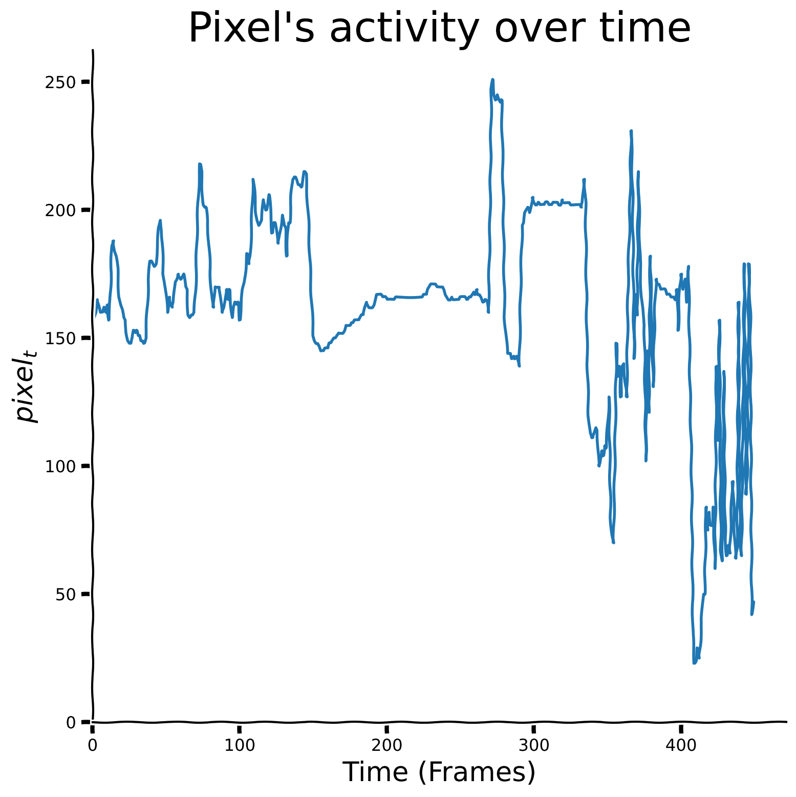
Write a function called “ReLU” that receives 2 inputs:
\(\mathbf{x}\): a 1d numpy array of \(p\) floats.
\(\theta\): a scalar threshold.
The function should return a numpy array called thres_x such that for each element \(j\):
Apply the ReLU function to the signal “sig” with a threshold of \(\theta = 150\).
###################################################################
## Fill out the following then remove
raise NotImplementedError("Student exercise: complete `thres_x` array calculation as defined.")
###################################################################
def ReLU(x, theta = 0):
"""
Calculates ReLU function for the given level of theta.
Inputs:
- x (np.ndarray): input data.
- theta (float, default = 0): threshold parameter.
Outputs:
- thres_x (np.ndarray): filtered values.
"""
thres_x = ...
return thres_x
Plot your results#
Show code cell source
# @title Plot your results
plot_relu_signal(sig, theta = 150)
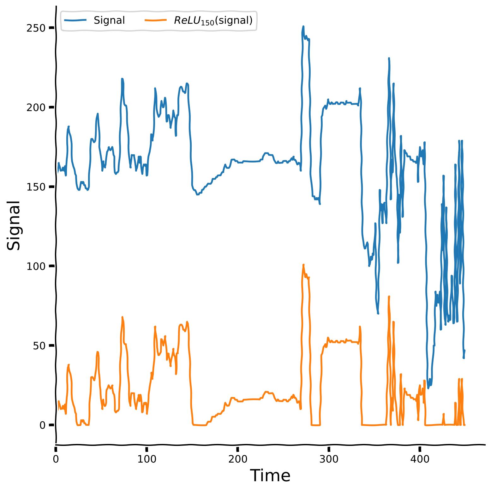
Let us also take a look at the aggregated plot, which takes threshold parameter values from 0 to 240 with step 20 and plots the ReLU version of the signal for each of them.
Threshold value impact on ReLU version of the signal#
Show code cell source
# @title Threshold value impact on ReLU version of the signal
theta_values = np.arange(0, 240, 20)
plot_relu_signals(sig ,theta_values)
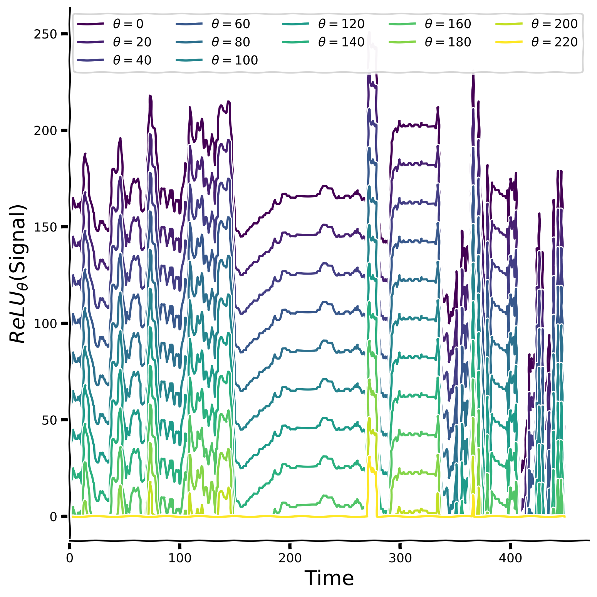
Finally, let’s calculate the kurtosis value to estimate the signal’s sparsity compared to its version passed through the ReLU function.
Try to gradually increase the threshold parameter (\(\theta\)) from 0 to 240 in intervals of 20 and plot the result for each value. How does the threshold affect the sparsity?
Kurtosis value comparison#
Show code cell source
# @title Kurtosis value comparison
slider = IntSlider(min=0, max=240, step=20, value=0, description='Threshold')
interact(plot_kurtosis, theta_value = slider)
<function __main__._Interact.__call__.<locals>.decorator(f)>
Kurtosis value behaviour
You might notice that, at first, the kurtosis value decreases (around till $\theta = 140$), and then it drastically increases (reflecting the desired sparsity property). If we take a closer look at the kurtosis formula, it measures the expected value (average) of standardized data values raised to the 4th power. That being said, if the data point lies in the range of standard deviation, it doesn’t contribute to the kurtosis value almost at all (something less than 1 to the fourth degree is small), and most of the contribution is produced by extreme outliers (lying far away from the range of standard deviation). So, the main characteristic it measures is the tailedness of the data - it will be high when the power of criticality of outliers will overweight the “simple” points (as kurtosis is an average metric for all points). What happens is that with $\theta \le 120$, outliers don't perform that much to the kurtosis.Submit your feedback#
Show code cell source
# @title Submit your feedback
content_review(f"{feedback_prefix}_sparsity_as_the_result_of_thresholding")
<__main__._NoOpWidget at 0x7f9a5c53fc70>
Section 2.2: Sparsity from temporal differentiation#
Estimated timing to here from start of tutorial: 20 minutes.
In this section, you will increase temporal sparsity in a natural 1D time series by temporal differencing. Changes in the world are sparse and thus tend to be especially informative, so computations highlighting those changes can be beneficial.
This could be implemented by feedforward inhibition in a neural circuit.
Video 3: Temporal differentiation#
Video available at https://youtube.com/watch?v=VaDioX2ZOqI
Video available at https://www.bilibili.com/video/BV1yE421P73H
<__main__._NoOpWidget at 0x7f9a5c515ed0>
Submit your feedback#
Show code cell source
# @title Submit your feedback
content_review(f"{feedback_prefix}_temporal_differentiation")
<__main__._NoOpWidget at 0x7f9a59375720>
Coding Exercise 2.2: Temporal differencing signal#
Denote the pixel value at time \(t\) by \(pixel_t\). Mathematically, we define the (absolute) temporal differences as
In code, define these absolute temporal differences to compute temporal_diff by applying np.diff on the signal sig and then applying np.abs to get absolute values. The NumPy function np.diff takes in the signal as well as an additional parameter n which compares the value of element i with i-n (the default value is n=1). As a reminder, if not specified, then the default hyperparameter value is used.
###################################################################
## Fill out the following then remove
raise NotImplementedError("Student exercise: complete temporal differentiation.")
###################################################################
temporal_diff = ...
Observe the result#
Show code cell source
# @title Observe the result
plot_signal(temporal_diff, title = "", ylabel = "$| pixel_t - pixel_{t-1} | $")
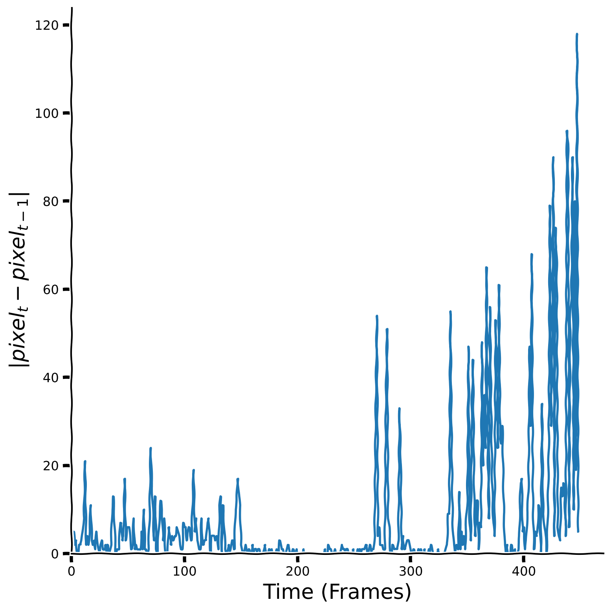
Let’s take a look at the histogram of the temporal difference values as well as kurtosis values.
Histograms for the signal and its temporal differences#
Show code cell source
# @title Histograms for the signal and its temporal differences
plot_temporal_difference_histogram(sig, temporal_diff)
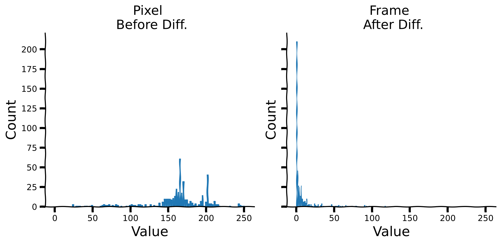
Kurtosis values for the signal and its temporal differences#
Show code cell source
# @title Kurtosis values for the signal and its temporal differences
plot_labeled_kurtosis(sig, temporal_diff, labels = ['Signal', 'Temporal \n Diff.'])
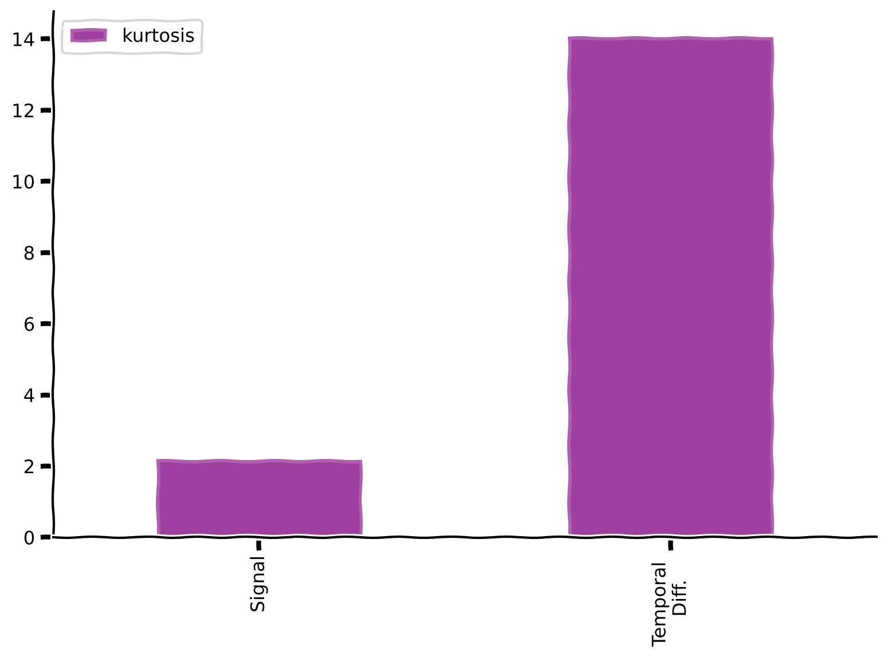
Submit your feedback#
Show code cell source
# @title Submit your feedback
content_review(f"{feedback_prefix}_temporal_differencing_signal")
<__main__._NoOpWidget at 0x7f9a5c6437f0>
Coding Exercise 2.3: Changes over longer delays#
What happens if we look at differences at longer delays \(\tau>1\)?
In this exercise, we will explore the effects of increasing \(\tau\) values on the sparsity of the temporal differentiation signal.
Create an array of 10 different \(\tau\) values: \(taus = [1, 11, 21... , 91]\).
Create a list called taus_list composed of 10 arrays where each array is the temporal differentiation with a different interval \(\tau\).
Compare the histograms of temporal differences for each different tau. Plot these histograms together, with all histograms using the same bins.
Pay attention: here, it is NOT recommended to use the built-in np.diff function.
###################################################################
## Fill out the following then remove
raise NotImplementedError("Student exercise: complete calcualtion of `taus` and `taus_list`.")
###################################################################
num_taus = 10
# create taus
taus = np.linspace(1, 91, ...).astype(int)
# create taus_list
taus_list = [np.abs(sig[...:] - sig[:-tau]) for tau in taus]
Plot your results#
Show code cell source
# @title Plot your results
plot_temp_diff_histogram(sig, taus, taus_list)
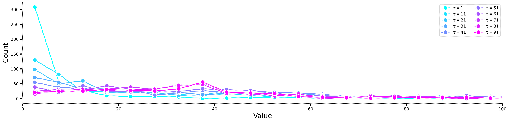
Now, let us look at the histograms for each \(\tau\) separately, as well as for the kurtosis values.
Histogram plots for different values of \(\tau\)#
Show code cell source
# @title Histogram plots for different values of $\tau$
plot_temp_diff_separate_histograms(sig, taus, taus_list)
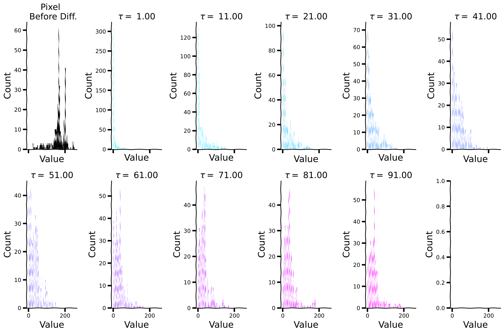
Plot sparsity (kurtosis) for different values of \(\tau\)#
Show code cell source
# @title Plot sparsity (kurtosis) for different values of $\tau$
plot_temp_diff_kurtosis(sig, taus, taus_list)
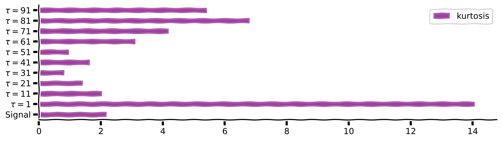
Submit your feedback#
Show code cell source
# @title Submit your feedback
content_review(f"{feedback_prefix}_increasing_the temporal_differcing_intervals")
<__main__._NoOpWidget at 0x7f9a58c59f00>
Exploring temporal differencing with a box filter#
Instead of differences separated by delay \(\tau\), we’ll compute differences between one value and the average over a range of delays. This is closer to what brains actually do. Here we’ll use a box filter for the average.
We define a diff_box function, which accepts a signal and the window size as inputs. Internally, it computes the difference between the signal and the average signal over a delayed time window. Observe the results for window = 10. We will explore changes at different times scales by choosing different window sizes and then comparing the raw signal with its diff_box temporal derivatives for each size.
Filter visualization#
Show code cell source
# @title Filter visualization
def diff_box(data, window, pad_size = 4):
filter = np.concatenate([np.repeat(0,pad_size), np.repeat(0,window), np.array([1]), np.repeat(-1,window), np.repeat(0,pad_size)]).astype(float)
filter /= np.sum(filter**2)**0.5
filter_plus_sum = filter[filter > 0].sum()
filter_min_sum = np.abs(filter[filter < 0]).sum()
filter[filter > 0] *= filter_min_sum/filter_plus_sum
diff_box = np.convolve(data, filter, mode='full')[:len(data)]
diff_box[:window] = diff_box[window]
return diff_box, filter
window = 10
diff_box_signal, filter = diff_box(sig, window)
with plt.xkcd():
fig, ax = plt.subplots()
plot_e1 = np.arange(len(filter))
plot_e2 = np.arange(len(filter)) + 1
plot_edge_mean = 0.5*(plot_e1 + plot_e2)
plot_edge = lists2list( [[e1 , e2] for e1 , e2 in zip(plot_e1, plot_e2)])
ax.plot(plot_edge, np.repeat(filter, 2), alpha = 0.3, color = 'purple')
ax.scatter(plot_edge_mean, filter, color = 'purple')
add_labels(ax,ylabel = 'Filter Value', title = 'Box Filter', xlabel = 'Value')
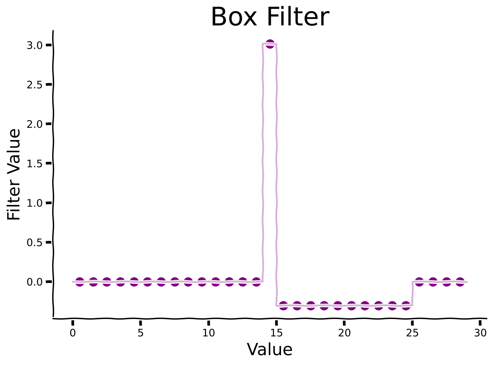
Discussion#
Why do you think the filter is asymmetric?
How might a filter influence the sparsity patterns observed in data?
Plot signal and its temporal derivative on a longer timescale#
Show code cell source
# @title Plot signal and its temporal derivative on a longer timescale
plot_diff_box(sig, filter, diff_box_signal)
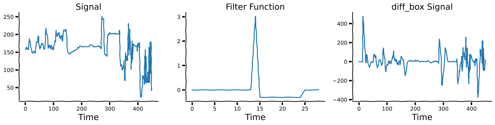
Now, we will define the window for 10 different values: windows = [1,11,21,...91] and calculate corresponding diff_box signal versions.
Define different window values#
Show code cell source
# @title Define different window values
windows = np.linspace(1, 91, 10)
diff_box_values = [diff_box(sig, int(window))[0] for window in windows]
Visualize temporal differences for different window sizes#
Show code cell source
# @title Visualize temporal differences for different window sizes
plot_diff_with_diff_box(sig, windows, diff_box_values)
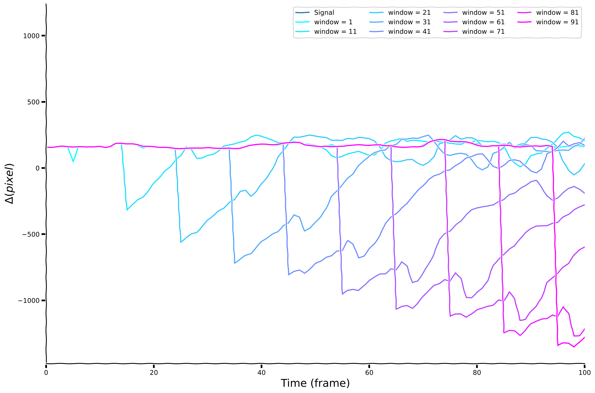
Histogram for each of the window size#
Show code cell source
# @title Histogram for each of the window size
plot_temp_diff_separate_histograms(sig, windows, diff_box_values, tau = False)
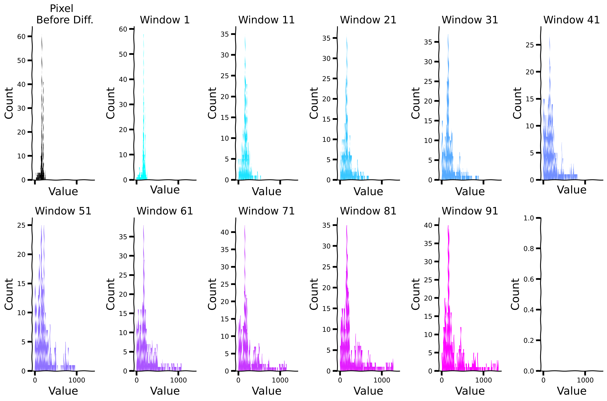
Compare sparsity (measured by kurtosis) for different window sizes#
Show code cell source
# @title Compare sparsity (measured by kurtosis) for different window sizes
plot_temp_diff_kurtosis(sig, windows, diff_box_values, tau = False)
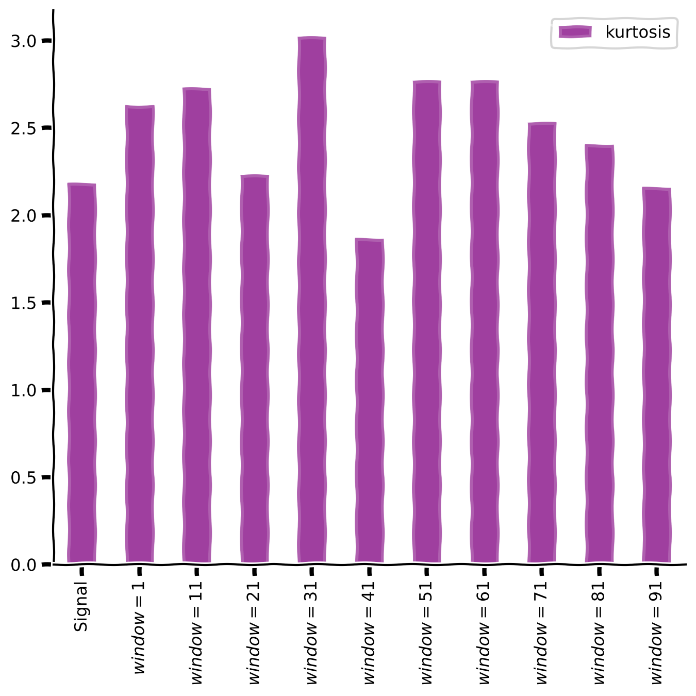
Discussion#
What do you observe about the kurtosis after applying the temporal differentiation?
Submit your feedback#
Show code cell source
# @title Submit your feedback
content_review(f"{feedback_prefix}_exploring_temporal_differencing_with_a_box_filter")
<__main__._NoOpWidget at 0x7f9a5294b340>
Section 3: Sparse coding#
Estimated timing to here from start of tutorial: 35 minutes.
Sparse coding is a coding strategy where the inputs are represented by a linear combination of features, most with zero coefficients but a few that are nonzero or active. Often, this is applied with an overcomplete basis set: we use more features that are necessary to cover the input space. This concept is often applied to sensory inputs, such as images or sounds, where the goal is to find a concise and efficient representation that captures the essential features of the input.
In Section 3.1, we assume that the basis set is fixed and known, and we just want to find sparse coefficients (or activities) that best explain the input data.
In Section 3.2, we then describe how to find a good basis set for use in sparse coding.
Section 3.1: Finding coefficients for sparse codes#
Video 4: Sparse coding#
Video available at https://youtube.com/watch?v=TkfPF24CZfk
Video available at https://www.bilibili.com/video/BV1sJ4m1u7Ed
<__main__._NoOpWidget at 0x7f9a52949300>
Submit your feedback#
Show code cell source
# @title Submit your feedback
content_review(f"{feedback_prefix}_sparse_coding")
<__main__._NoOpWidget at 0x7f9a52949330>
Neuroscience measures of sparse responses#
In a pivotal experiment [1] at Johns Hopkins University, Hubel and Wiesel implanted an electrode into the visual cortex of a living cat and measured its electrical activity in response to displayed images.
Despite prolonged exposure to various images, no significant activity was recorded.
However, unexpectedly, when the slide was inserted and removed from the projector, the neurons responded robustly. This led to the discovery of neurons highly sensitive to edge orientation and location, providing the first insights into the type of information coded by neurons.
[1] Hubel DH, Wiesel TN (1962). “Receptive fields, binocular interaction and functional architecture in the cat’s visual cortex.” J. Physiol.160, 106-154.
Discussion#
What implications do these specialized properties of neural representation hold for our understanding of visual perception?
How might these findings inform computational models of visual processing in artificial systems?
Computational Neuroscience model of sparse coding#
In 1996, Olshausen and Field [2] demonstrated that sparse coding could be a good model of the early visual system, particularly in V1. They found that neuron selectivity in the visual cortex could be explained through sparse coding, where only a small subset of neurons responded to specific features or patterns. Receptive fields learned through this objective looked like orientation-specific edge detectors, like those in biological visual systems, as we will see below.
[2] Olshausen BA, Field DJ (1996). “Emergence of simple-cell receptive field properties by learning a sparse code for natural images.” Nature 381: 607-609.
\(\ell_0\) pseudo-norm regularization to promote sparsity#
The \(\ell_0\) pseudo-norm is defined as the number of non-zero features in the signal. Particularly, let \(h \in \mathbb{R}^{J}\) be a vector with \(J\) “latent activity” features. Then:
Hence, the \(\|\ell\|_0\) pseudo-norm can be used to promote sparsity by adding it to a cost function to “punish” the number of non-zero features.
Let’s assume that we have a simple linear model where we want to capture the observations \(y\) using the linear model \(D\) (which we will later call dictionary). \(D\)’s features (columns) can have sparse weights denoted by \(h\). This is known as a generative model, as it generates the sensory input.
For instance, in the brain, \(D\) can represent a basis of neuronal networks while \(h\) can capture their sparse time-changing contributions to the overall brain activity (e.g. see the dLDS model in [3]).
Hence, we are looking for the weights \(h\) under the assumption that:
where \(\epsilon\) is an i.i.d Gaussian noise with zero mean and std of \(\sigma_\epsilon\), i.e., \(\epsilon \sim \mathcal{N}(0, \sigma_\epsilon^2)\).
To enforce that \(h\) is sparse, we penalize the number of non-zero features with penalty \(\lambda\). We thus want to solve the following minimization problem:
[3] Mudrik, N., Chen, Y., Yezerets, E., Rozell, C. J., & Charles, A. S. (2024). Decomposed linear dynamical systems (dlds) for learning the latent components of neural dynamics. Journal of Machine Learning Research, 25(59), 1-44.

In the above figure and throughout this tutorial, we will use the following definitions:
\(D\): Dictionary
Features: Refers to the columns of \(D\) (i.e., basis elements)
Basis: Refers to the collection of features
\(h\): A sparse vector assigning weights to the elements of \(D\)
These definitions will help clarify the terminology used in discussing the concepts of dictionary learning and sparse coding.
How can we find the sparse vector \(h\) given a dictionary?#
One method to find a sparse solution for a linear decomposition with \(\ell_0\) regularization is OMP (Orthogonal Matching Pursuit) [4]. As explained in the video, OMP is an approximate method to find the best matching features to represent a target signal.
OMP iteratively selects the features that best correlate with the remaining part of the signal, updates the remaining part by subtracting the contribution of the chosen features, and repeats until the remaining part is minimized or the desired number of features is selected.
In this context, a “dictionary” is a collection of features that we use to represent the target signal. These features are like building blocks, and the goal of the OMP algorithm is to find the right combination of these blocks from the dictionary to match the target signal best.
[4] Pati, Y. C., Rezaiifar, R., & Krishnaprasad, P. S. (1993, November). “Orthogonal matching pursuit: Recursive function approximation with applications to wavelet decomposition.” In Proceedings of 27th Asilomar conference on signals, systems, and computers (pp. 40-44). IEEE.
Coding Exercise 3: OMP algorithm#
Now, we will explore the Orthogonal Matching Pursuit (OMP) algorithm with increasing sparsity levels and examine how pixel values are captured by different frequencies.
We will follow the following steps:
Generate sinusoidal features with varying frequencies ranging from 0.001 to 1, applying each frequency to a time array. These features will serve in this exercise as the dictionary.
Implement the OMP algorithm with increasing sparsity levels. Feel free to change the number of non-zero coefficients (in
n_nonzero_coefsto explore its effect.Fit the generated sinusoidal signals to the dictionary of frequencies you defined.
Evaluate how well each sparsity level captures the variations in features.
Explore the results to understand the trade-off between sparsity and the accuracy of signal representation.
###################################################################
## Fill out the following then remove
raise NotImplementedError("Student exercise: complete OMP algorithm preparation.")
###################################################################
T_ar = np.arange(len(sig))
#100 different frequency values from 0.001 to 1, then apply each frequency on `T_ar`
freqs = np.linspace(0.001, 1, ...)
set_sigs = [np.sin(...*...) for f in freqs]
# define 'reg' --- an sklearn object of OrthogonalMatchingPursuit, and fit it to the data, where the frequency bases are the features and the signal is the label
reg = OrthogonalMatchingPursuit(fit_intercept = True, n_nonzero_coefs = 10).fit(np.vstack(set_sigs).T, sig)
Observe the plot of 3 example signals.
Plot of 3 basis signals#
Show code cell source
# @title Plot of 3 basis signals
with plt.xkcd():
fig, axs = plt.subplots(3,1,sharex = True, figsize = (10,5), sharey = True)
axs[0].plot(set_sigs[0], lw = 3)
axs[1].plot(set_sigs[1], lw = 3)
axs[2].plot(set_sigs[-1], lw = 3)
[remove_edges(ax) for ax in axs]
[ax.set_xlim(left = 0) for ax in axs]
fig.tight_layout()
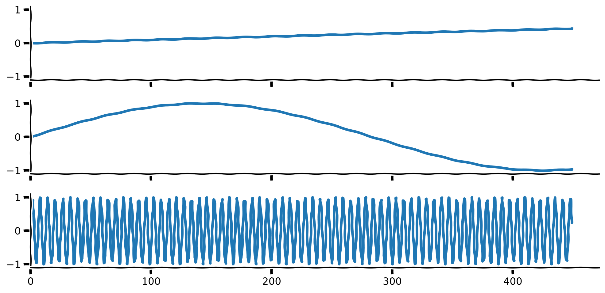
Next, run the following code to plot the basis features and the reconstruction.
Visualize basis features and signal reconstruction#
Show code cell source
# @title Visualize basis features and signal reconstruction
with plt.xkcd():
fig, axs = plt.subplots(2,2, figsize = (15,10))
axs = axs.flatten()
sns.heatmap(np.vstack(set_sigs), ax = axs[0])
axs[0].set_yticks(np.arange(0,len(freqs)-.5, 4)+ 0.5)
axs[0].set_yticklabels(['$f = %.4f$'%freqs[int(j)] for j in np.arange(0,len(freqs)-0.5, 4)], rotation = 0)
add_labels(axs[0], xlabel = 'Time', ylabel= 'Basis Features', title = 'Frequency Basis Features')
axs[1].plot(sig, label = 'Original', lw = 4)
axs[1].plot(reg.predict(np.vstack(set_sigs).T), lw = 4, label = 'Reconstruction')
remove_edges(axs[1])
axs[1].legend()
add_labels(axs[1], xlabel = 'Time', ylabel= 'Signal', title = 'Reconstruction')
axs[1].set_xlim(left = 0)
axs[2].stem(freqs, reg.coef_)
remove_edges(axs[2])
add_labels(axs[2], xlabel = 'Frequencies', ylabel= 'Frequency weight', title = 'Frequency Components Contributions')
axs[2].set_xlim(left = 0)
num_colors = np.sum(reg.coef_ != 0)
cmap_name = 'winter'
samples = np.linspace(0, 1, num_colors)
colors = plt.colormaps[cmap_name](samples)
colors_expand = np.zeros((len(reg.coef_), 4))
colors_expand[reg.coef_!= 0] = np.vstack(colors)
axs[-1].plot(sig, label = 'Original', color = 'black')
[axs[-1].plot(reg.coef_[j]*set_sigs[j] + reg.intercept_, label = '$f = %.4f$'%f, lw = 4, color = colors_expand[j]) for j, f in enumerate(freqs) if reg.coef_[j] != 0]
remove_edges(axs[-1])
axs[-1].legend(ncol = 4)
axs[-1].set_xlim(left = 0)
add_labels(axs[-1], xlabel = 'Time', ylabel= 'Signal', title = 'Contribution')
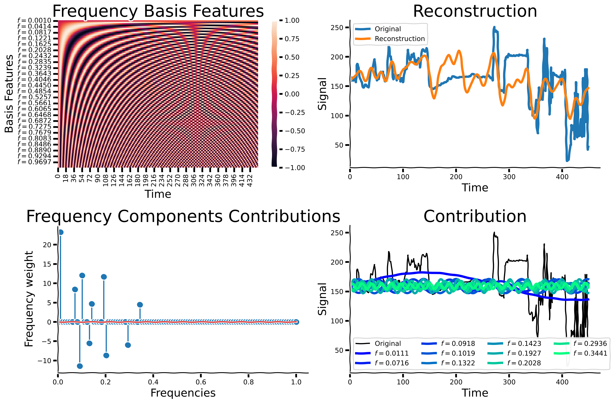
Now, we will explore the effect of increasing the number of non-zero coefficients. We define the number of non-zero coefficients to be the cardinality. Below, please run OMP with increasing numbers of non-zero coefficients (increasing cardinality), from 1 to 101 in intervals of 5. We will then compare the accuracy and reconstruction performance of each fitted model to exmamine the relationship between cardinality and signal reconstruction. You should already have an idea what the performance might look like when considering a very low cardinality and a very high cardinality. If you are familiar with dimensionality reduction techniques like PCA, this should give you a starting point to frame this question.
OMP for different cardinality#
Show code cell source
# @title OMP for different cardinality
# define a list or numpy array of optional cardinalities from 1 to 51 in intervals of 5.
cardinalities = np.arange(1,101,5)
# For each of the optional cardinalities, run OMP using the pixel's signal from before. Create a list called "regs" that includes all OMP's fitted objects
regs = [OrthogonalMatchingPursuit(fit_intercept = True, n_nonzero_coefs = card).fit(np.vstack(set_sigs).T, sig) for card in cardinalities]
Now, let’s observe the effect of the cardinality on the reconstruction.
Cardinality impact on reconstruction quality#
Show code cell source
# @title Cardinality impact on reconstruction quality
with plt.xkcd():
fig, axs = plt.subplots(1, 2, figsize = (15,5))
ax = axs[0]
ax.plot(cardinalities, [reg.score(np.vstack(set_sigs).T, sig) for reg in regs], marker = '.')
ax.set_xlim(left = 0)
ax.set_ylim(bottom = 0)
add_labels(ax, ylabel = 'coefficient of determination', xlabel = 'Cardinality')
remove_edges(ax)
mean_er = np.vstack([np.mean((reg.predict(np.vstack(set_sigs).T) - sig)**2)**0.5 for reg in regs])
axs[1].plot(cardinalities, mean_er)
axs[1].set_xlim(left = 0)
axs[1].set_ylim(bottom = 0)
remove_edges(axs[1])
add_labels(axs[1], ylabel = 'rMSE', xlabel = 'Cardinality')
plt.show()
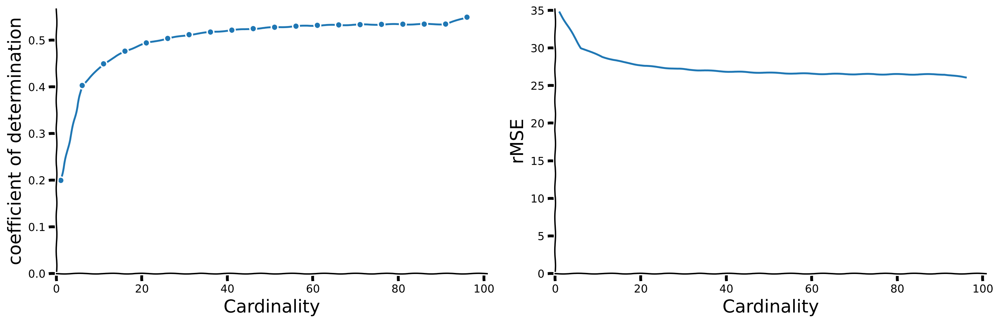
How would you choose the ideal cardinality?
Hint: Look for an ‘ankle’ in complexity vs. sparsity plots, which indicates a balance between expressivity and sparsity. Discuss these observations with your group to determine the most effective cardinality.
How does the above affect generalization?
Hint: Consider how learning fewer but most relevant features from noisy data might help the model generalize better to new, unseen data.
What is your conclusion?
Hint: Discuss how sparsity, which emphasizes few significant features, improves the model’s robustness and utility in real-world scenarios and the considerations needed when setting the level of sparsity.
Challenges with OMP
While OMP is a common and simple practice for finding the sparse representation of a dictionary of features, it presents multiple challenges. The \(\ell_0\) norm is not convex, making it hard to identify the sparse vector. Another challenge is computational complexity. Approaches addressing these issues exist. Some of them replace the \(\ell_0\) norm with its \(\ell_1\) approximation, promoting sparsity while retaining convexity, making it easier to optimize.
Submit your feedback#
Show code cell source
# @title Submit your feedback
content_review(f"{feedback_prefix}_omp_algorithm")
<__main__._NoOpWidget at 0x7f9a58884790>
Section 4: Identifying sparse visual fields in natural images using sparse coding#
Estimated timing to here from start of tutorial: 1 hour 5 minutes.
In this section we will understand the basis of visual field perception.
Video 6: Sparse visual fields#
Video available at https://youtube.com/watch?v=zqmrxK_N6Jw
Video available at https://www.bilibili.com/video/BV1Pi421v7Wk
<__main__._NoOpWidget at 0x7f9a591e0b80>
Submit your feedback#
Show code cell source
# @title Submit your feedback
content_review(f"{feedback_prefix}_sparse_visual_fields")
<__main__._NoOpWidget at 0x7f9a591e0100>
Dictionary Learning for CIFAR10#
We will use the CIFAR10 dataset. Let’s, at first, load the data.
Load CIFAR-10 dataset#
Show code cell source
# @title Load CIFAR-10 dataset
import contextlib
import io
with contextlib.redirect_stdout(io.StringIO()): #to suppress output
(x_train, y_train), (x_test, y_test) = tf.keras.datasets.cifar10.load_data()
Now, let’s create a short video of these images switching. Now, we will detect the underlying visual fields.
Create & explore video#
Show code cell source
# @title Create & explore video
num_image_show = 50
img_index = np.random.randint(0, len(x_train), num_image_show)
x_train_ar = np.copy(x_train)[img_index]
video_gray = 0.2989 * x_train_ar[:, :, :,0] + 0.5870 * x_train_ar[:, :, :,1] + 0.1140 * x_train_ar[:, :, :,2]
def show_slice_CIFAR(slice_index):
with plt.xkcd():
plt.figure(figsize=(2, 2))
plt.imshow(data_CIFAR[slice_index] , cmap='gray')
plt.axis('off')
plt.show()
data_CIFAR = np.repeat(video_gray, 1, axis = 0)
# Create a slider to select the slice
slider = IntSlider(min=0, max=data_CIFAR.shape[0] - 1, step=1, value=0, description='Frame')
# Connect the slider and the function
interact(show_slice_CIFAR, slice_index=slider)
Now, let’s try to extract the visual field from the images. Look at the components identified below and compare the ones identified by PCA to those identified by Olshausen & Field via sparse dictionary learning.

Following Olshausen & Field’s paper, we will demonstrate how to receive visual field components that emerge from real-world images.
We expect to find features that are:
Spatially localized.
Oriented.
Selective to structure at different spatial scales.
We would like to understand the receptive field properties of neurons in the visual cortex by applying sparsity to identify the basic fundamental components underlying natural images.
We will reshape the CIFAR data we loaded before so that the time (frame) axis is the last one.
video_file = data_CIFAR.transpose((1,2,0))
For the exercise, we will focus on a small subset of the data so that you can understand the idea. We will later load better results trained for a longer time.
We will first set some parameters to take a small subset of the video. In the cell below, you can explore parameters that are set by default.
Set default parameters#
Show code cell source
# @title Set default parameters
size_check = 4 # 32 for the full size
# how many images we want to consider? (choose larger numbers for better results)
num_frames_include = 80
# set number of dictionary features
dict_comp = 8
# set number of model iterations
max_iter = 100
num_frames_include = np.min([num_frames_include , x_train.shape[0]])
Let’s visualize the small subset we are taking for the training.
Images visualization#
Show code cell source
# @title Images visualization
# let's choose some random images to focus on
img_index = np.random.randint(0, len(x_train), num_frames_include)
x_train_ar = np.copy(x_train)[img_index]
# change to grayscale
video_gray = 0.2989 * x_train_ar[:, :, :,0] + 0.5870 * x_train_ar[:, :, :,1] + 0.1140 * x_train_ar[:, :, :,2]
# update data and create short movie
data_CIFAR = np.repeat(video_gray, 1, axis = 0)
# Create a slider to select the slice
slider = IntSlider(min=0, max=data_CIFAR.shape[0] - 1, step=1, value=0, description='Frame')
# Connect the slider and the function
interact(show_slice_CIFAR, slice_index=slider)
Coding Exercise 5: Find the latent components by training the dictionary learner#
Training time will take around 1 minute.
Please follow the following steps:
Choose Alpha (\(\alpha\)):
Each group member should select a unique value for \(\alpha\) between approximately ~0.0001 and ~1.
\(\alpha\) controls the sparsity of the learned dictionary components in the DictionaryLearning algorithm.
Discussion: Before running the model, discuss your expectations on how different \(\alpha\) values might affect the sparsity and quality of learned features.
Apply Dictionary Learning:
Use the chosen \(\alpha\) to fit the DictionaryLearning model (
dict_learner).Compare and document how each \(\alpha\) (selected by different group members) influences the sparsity and quality of learned dictionary components. Note: Each member should choose only one \(\alpha\) due to computational constraints.
Visualize Results:
Plot heatmap visualizations (
sns.heatmap) to examine individual dictionary components for each \(\alpha\) value.Plot coefficients over time (
D_transformed) to analyze and compare how they vary across different \(\alpha\) values.
Group Discussion:
Compare your results with peers who selected different \(\alpha\) values.
Discuss and interpret the impact of \(\alpha\) on sparsity and feature representation.
Summarize findings on which \(\alpha\) values appear most effective for achieving desired sparsity and representation quality.
# Get the number of frames in the video
T = video_file.shape[2]
# Get the number of rows in the video
N0 = video_file.shape[0]
# Get the number of columns in the video, leaving out 10 columns
N1 = video_file.shape[1] - 10
# Get the shape of a single frame
shape_frame = video_file[:, :, 0].shape
# Flatten each frame and store them in a list
num_frames_include = np.min([num_frames_include, video_file.shape[2]])
size_check = np.min([size_check, video_file.shape[0]])
video_file_ar = [video_file[:size_check, :size_check, frame].flatten() for frame in range(num_frames_include)]
###################################################################
## Fill out the following then remove.
raise NotImplementedError("Student exercise: please choose an $\alpha$ value here. Recommended $0.0001 <= \alpha <= 1$")
###################################################################
alpha = ...
dict_learner = DictionaryLearning(
n_components=dict_comp, transform_algorithm = 'lasso_lars', transform_alpha=alpha,
random_state=42,
)
D_transformed = dict_learner.fit_transform(np.vstack(video_file_ar))
with plt.xkcd():
num_rows = 3
num_cols = int(( num_frames_include + 2)/num_rows)
shape_frame = (size_check,size_check)
cmap_name = 'plasma'
samples = np.linspace(0, 1, len(dict_learner.components_)+1)
colors = plt.colormaps[cmap_name](samples)
num_comps = len(dict_learner.components_)
vmin = np.min(np.vstack(dict_learner.components_))
vmax = np.max(np.vstack(dict_learner.components_))
[sns.heatmap(dict_learner.components_[j].reshape(shape_frame), ax = axs[j], square = True, vmin = vmin, vmax = vmax,
cmap = 'PiYG', center = 0, cbar = False) for j in range(num_comps)]
[ax.set_xticks([]) for ax in axs]
[ax.set_yticks([]) for ax in axs]
titles = ['Atom %d'%j for j in range(1, num_comps +1)];
[ax.set_title(title, fontsize = 40) for j, (title, ax) in enumerate(zip(titles, axs))]
fig, ax = plt.subplots(figsize = (20,5))
[ax.plot(D_transformed[:,j], lw = 5, label = 'Atom %d'%(j+1))
for j in range(num_comps)]
remove_edges(ax)
ax.set_xlim(left = 0)
[ax.set_yticks([]) for ax in axs]
[ax.set_xticks([]) for ax in axs]
add_labels(ax, xlabel = 'Time', ylabel = 'Coefficients', title = "Features' Coefficients")
fig.tight_layout()
# Get the number of frames in the video
T = video_file.shape[2]
# Get the number of rows in the video
N0 = video_file.shape[0]
# Get the number of columns in the video, leaving out 10 columns
N1 = video_file.shape[1] - 10
# Get the shape of a single frame
shape_frame = video_file[:, :, 0].shape
# Flatten each frame and store them in a list
num_frames_include = np.min([num_frames_include, video_file.shape[2]])
size_check = np.min([size_check, video_file.shape[0]])
video_file_ar = [video_file[:size_check, :size_check, frame].flatten() for frame in range(num_frames_include)]
alpha = 0.5
dict_learner = DictionaryLearning(
n_components=dict_comp, transform_algorithm = 'lasso_lars', transform_alpha=alpha,
random_state=42,
)
D_transformed = dict_learner.fit_transform(np.vstack(video_file_ar))
with plt.xkcd():
num_rows = 3
num_cols = int(( num_frames_include + 2)/num_rows)
shape_frame = (size_check,size_check)
cmap_name = 'plasma'
samples = np.linspace(0, 1, len(dict_learner.components_)+1)
colors = plt.colormaps[cmap_name](samples)
num_comps = len(dict_learner.components_)
vmin = np.min(np.vstack(dict_learner.components_))
vmax = np.max(np.vstack(dict_learner.components_))
[sns.heatmap(dict_learner.components_[j].reshape(shape_frame), ax = axs[j], square = True, vmin = vmin, vmax = vmax,
cmap = 'PiYG', center = 0, cbar = False) for j in range(num_comps)]
[ax.set_xticks([]) for ax in axs]
[ax.set_yticks([]) for ax in axs]
titles = ['Atom %d'%j for j in range(1, num_comps +1)];
[ax.set_title(title, fontsize = 40) for j, (title, ax) in enumerate(zip(titles, axs))]
fig, ax = plt.subplots(figsize = (20,5))
[ax.plot(D_transformed[:,j], lw = 5, label = 'Atom %d'%(j+1))
for j in range(num_comps)]
remove_edges(ax)
ax.set_xlim(left = 0)
[ax.set_yticks([]) for ax in axs]
[ax.set_xticks([]) for ax in axs]
add_labels(ax, xlabel = 'Time', ylabel = 'Coefficients', title = "Features' Coefficients")
fig.tight_layout()
Submit your feedback#
Show code cell source
# @title Submit your feedback
content_review(f"{feedback_prefix}_find_the_latent_components_by_training_the_dictionary_learner")
<__main__._NoOpWidget at 0x7f9a591e3d90>
Due to our efforts to limit computation time, we focused on a small area of the images, and we only considered a limited number of them with a restricted number of iterations. As a result, the quality of the outcomes was poor. For your exploration, we are providing better results obtained from training on a larger amount of images. This is important for discovering the components that better resemble the biological visual field.
Load full model & visualize features#
Show code cell source
# @title Load full model & visualize features
res = np.load('model.npy', allow_pickle = True).item()
comps = res['dict_learner_components_']
with plt.xkcd():
shape_frame = (32,32)
cmap_name = 'plasma'
samples = np.linspace(0, 1, len(comps)+1)
colors = plt.colormaps[cmap_name](samples)
num_comps = len(comps)
vmin = np.min(np.vstack(comps))
vmax = np.max(np.vstack(comps))
fig, axs = plt.subplots(2, int(np.ceil((num_comps+1)/2)) , figsize = (20,15), sharey = True, sharex = True)
axs = axs.flatten()
[axs[j].imshow(comps[j].reshape(shape_frame), vmin = 0) for j in range(num_comps)]
[ax.set_xticks([]) for ax in axs]
[ax.set_yticks([]) for ax in axs]
titles = ['Atom %d'%j for j in range(1, num_comps +1)];
[ax.set_title(title, fontsize = 40, color = colors[j]) for j, (title, ax) in enumerate(zip(titles, axs))]
axs[-1].set_visible(False)
axs[-2].set_visible(False)
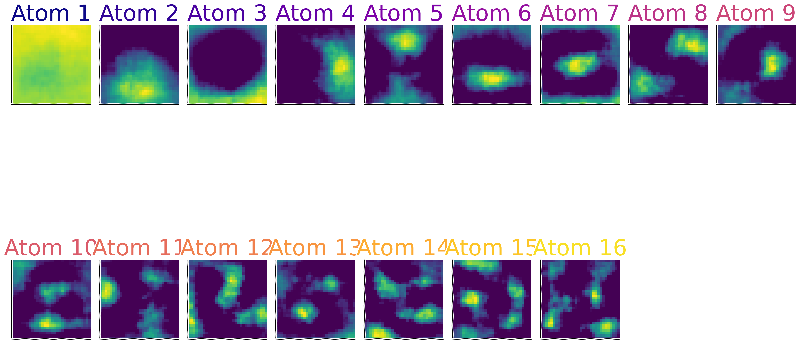
Sparse Activity of the components (\(h\))#
Show code cell source
# @title Sparse Activity of the components ($h$)
D_transformed = res['X_transformed']
with plt.xkcd():
fig, ax = plt.subplots(figsize = (20,5))
[ax.plot(D_transformed[:,j], color = colors[j], lw = 5, label = 'Atom %d'%(j+1))
for j in range(num_comps)]
remove_edges(ax)
ax.set_xlim(left = 0)
[ax.set_yticks([]) for ax in axs]
[ax.set_xticks([]) for ax in axs]
add_labels(ax, xlabel = 'Time', ylabel = 'Coefficients', title = "Features' Coefficients")
create_legend({'Atom %d'%(j+1): colors[j] for j in range(num_comps)}, params_leg = {'ncol': 5})
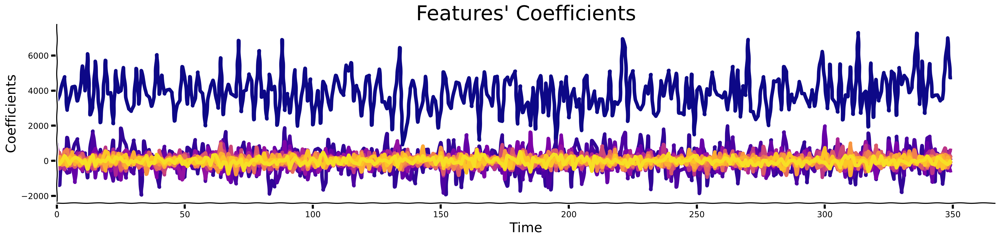
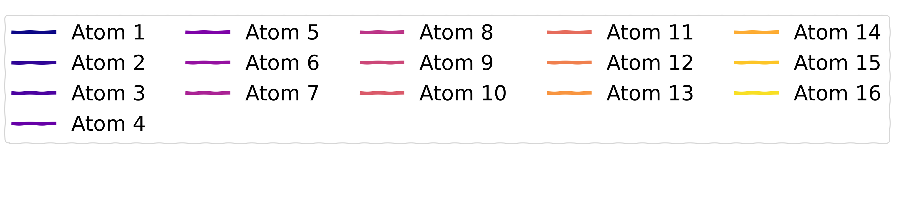
Submit your feedback#
Show code cell source
# @title Submit your feedback
content_review(f"{feedback_prefix}_dictionary_learning_for_cifar10")
<__main__._NoOpWidget at 0x7f9a529c1a80>
In this section, you’ve identified sparse components underlying natural images, similar to the approach taken by Olshausen and Field (1996) [2], which led to the widespread use of Dictionary Learning in research.
Interestingly, applying sparsity to the number of active components is crucial and closely related to how the visual cortex, including V1, processes visual information.
As discovered in seminal experiments by Hubel and Wiesel [mentioned before in 1], neurons in V1 are tuned to respond optimally to specific, sparse patterns of visual stimuli—this represents an efficient data representation that minimizes redundancy while maximizing information content.
This mechanism demonstrates that neurons in V1 intensely fire for certain edge orientations and light patterns, closely paralleling the sparse coding models used today in AI.
How do you think these insights about V1 might enhance the algorithms you will develop in the field of neuroAI?
What other neural mechanisms do you think utilize sparsity and can inspire AI research?
Summary#
Estimated timing of tutorial: 1 hour 20 minutes.
In this tutorial, we first discovered the notion of “sparsity” by looking at the signal and its temporal difference. We also introduced kurtosis as one of the main metrics used to measure sparsity. We visually observed this effect by looking at the histograms of pixel values. Then, we introduced the notion of “sparse coding” by deriving fundamental units (basis) that constitute complex signals. For that, we used the OMP algorithm and compared the identified features to those found by applying PCA. In the end, we used the algorithm for 2 datasets: MNIST & CIFAR10.
The Big Picture#
The main message we would like you to take away from this tutorial is that sparsity has numerous advantageous properties for representing computation in the brain and in AI models. We know the brain likely uses this principle extensively. The mechanisms to measure and induce sparsity in computational models of neuroscience and AI are important and we hope you have gained an idea of how you might think about applications of sparsity in the future.
In the next tutorial, we will look at another essential operation to be realized in brains & machines - normalization. If you have time at the end of this day’s tutorials, we have also included some further bonus material that covers the interesting application of spatial sparsity. If you’re running low on time, please concentrate on the other tutorials and come back to the bonus material at a more convenient time.